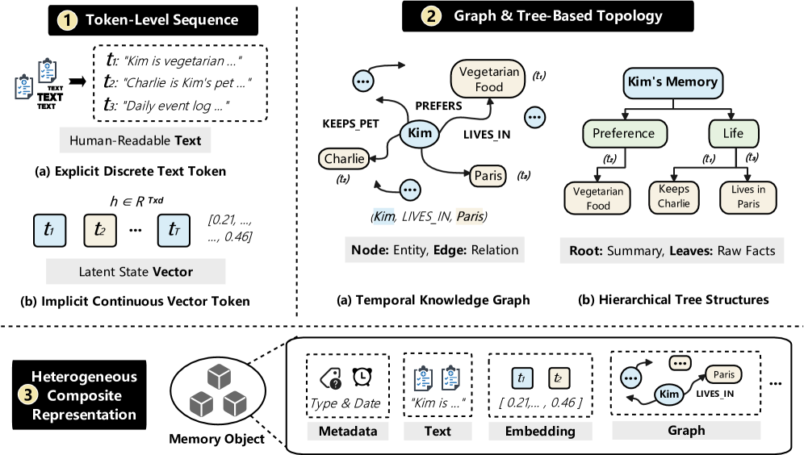
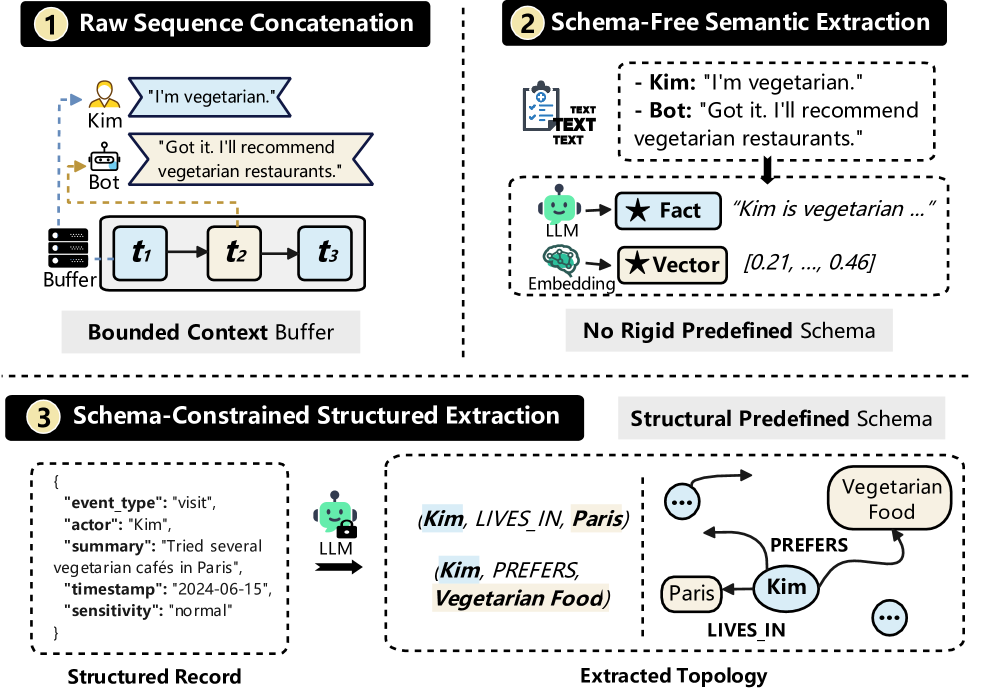
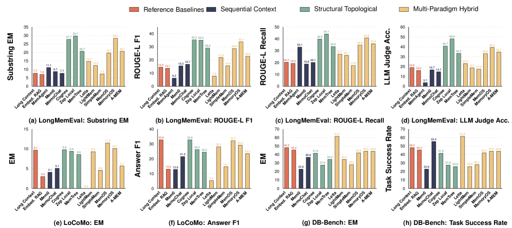
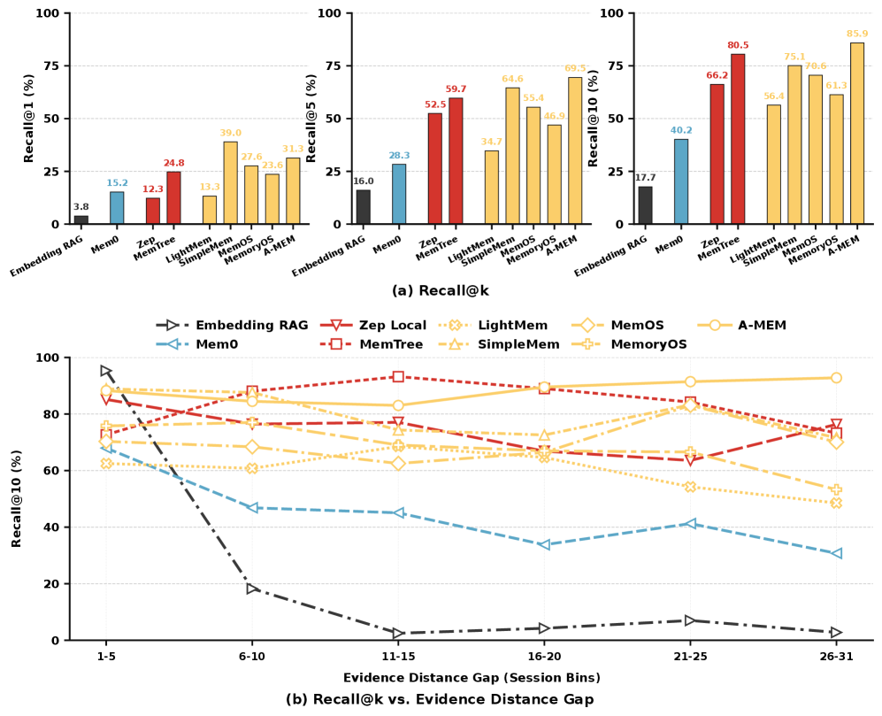
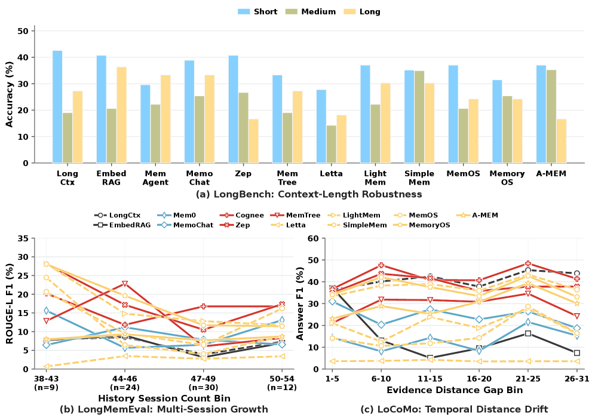
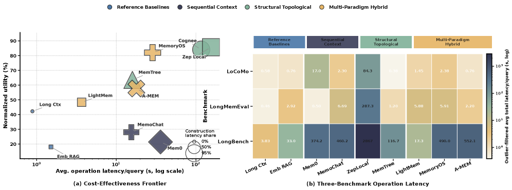
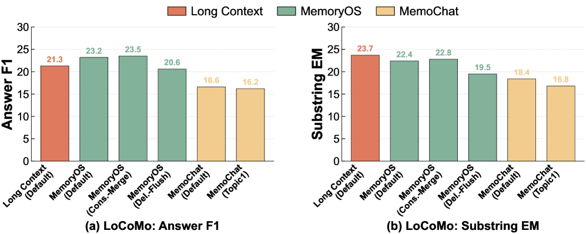

Are We Ready For An Agent-Native Memory System? — paper note Are We Ready For An Agent-Native Memory System? — 논문 정리
A survey and a benchmark study from SJTU / Tsinghua / MemTensor that treats LLM-agent memory as a data-management system, not a retrieval add-on. It decomposes memory into four modules, then puts 12 memory systems + 2 baselines through 5 workloads / 11 datasets — measuring not just task success but retrieval fidelity, update robustness, long-horizon stability, and operational cost. The verdict: no architecture dominates, structure often isn't worth its cost, and for time-dependent queries plain long-context still wins. SJTU / Tsinghua / MemTensor의 서베이 겸 벤치마크 연구로, LLM 에이전트 메모리를 검색 부가기능이 아니라 데이터 관리 시스템으로 다룬다. 메모리를 네 모듈로 분해한 뒤, 메모리 시스템 12개 + 베이스라인 2개를 5개 워크로드 / 11개 데이터셋에 돌린다 — 과제 성공률뿐 아니라 검색 충실도·업데이트 강건성·장기 안정성·운영 비용까지 잰다. 결론: 지배적 아키텍처는 없고, 구조는 종종 비용값을 못 하며, 시간 의존 쿼리에선 순정 롱컨텍스트가 여전히 이긴다.
📖 Agent-native memory📖 에이전트 네이티브 메모리
A persistent data-management system holding info beyond a single inference step, decoupled from the model's weights and context window — storage + retrieval + update + lifecycle governance, not a one-shot lookup.단일 추론 단계를 넘어 정보를 보관하는 지속적 데이터 관리 시스템으로, 모델 가중치·컨텍스트 창과 분리돼 있다 — 저장+검색+갱신+라이프사이클 관리이지 일회성 조회가 아니다.
📖 ⟨ℛ, 𝒮, 𝒬, 𝒰⟩
The four modules the paper decomposes any memory system into: ℛ Representation & Storage, 𝒮 Extraction, 𝒬 Retrieval & Routing, 𝒰 Maintenance.논문이 모든 메모리 시스템을 분해하는 네 모듈: ℛ 표현·저장, 𝒮 추출, 𝒬 검색·라우팅, 𝒰 유지관리.
📖 Memory vs RAG📖 메모리 vs RAG
RAG = a stateless, read-only retrieval primitive over a static corpus. Memory = stateful, written/updated/consolidated over time under conflicting observations. The distinction is the whole point.RAG = 정적 코퍼스 위의 무상태·읽기 전용 검색 프리미티브. 메모리 = 상충하는 관측 아래 시간에 걸쳐 쓰이고·갱신되고·통합되는 상태 기반. 이 구분이 핵심.
📖 LoCoMo · LongMemEval · DB-Bench
The main workloads: LoCoMo (long-conversation QA), LongMemEval (multi-session, via MemoryAgentBench), DB-Bench (procedural DB ops, from LifelongAgentBench). Plus LongBench for controlled long context.주요 워크로드: LoCoMo(긴 대화 QA), LongMemEval(다중 세션, MemoryAgentBench 경유), DB-Bench(절차적 DB 조작, LifelongAgentBench). 여기에 통제된 롱컨텍스트용 LongBench.
📖 The metrics📖 지표들
EM (exact match), Answer F1 (token overlap), ROUGE-L, an LLM-Judge Accuracy (a GPT-5.4 judge), Recall@K over evidence-distance bins, and Task Success Rate for executable DB ops.EM(정확 일치), Answer F1(토큰 겹침), ROUGE-L, LLM-Judge 정확도(GPT-5.4 판정), 증거 거리 구간별 Recall@K, 실행형 DB 조작의 Task Success Rate.
📖 "Hallucinations of the past"📖 "과거의 환각"
The paper's phrase for what happens when a memory store has no lifecycle management: it keeps returning stale facts that were true earlier but have since been superseded.라이프사이클 관리가 없는 메모리 저장소에서 벌어지는 일을 논문이 부른 표현: 예전엔 맞았지만 이제 갱신된 낡은 사실을 계속 되돌려준다.
🗺️ Orientation — memory as a system, not a lookup 오리엔테이션 — 조회가 아니라 시스템으로서의 메모리
A chatbot that "remembers" your name across sessions is doing something surprisingly heavy under the hood: it has to extract what's worth keeping from a stream of turns, represent and store it somewhere (text? a vector? a graph?), retrieve the right pieces when a later query needs them, and maintain the store as facts change (you moved cities; your old address is now wrong). The paper's central move is to stop evaluating these systems by a single end-task score and instead treat memory as a data-management system with those four jobs — and to ask whether any of today's systems get all four right.
세션을 넘어 당신 이름을 "기억"하는 챗봇은 겉보기보다 무거운 일을 한다: 턴의 흐름에서 간직할 가치가 있는 것을 추출하고, 어딘가에 표현·저장하고(텍스트? 벡터? 그래프?), 나중 쿼리가 필요할 때 맞는 조각을 검색하고, 사실이 바뀌면 저장소를 유지관리한다(이사를 갔다 — 옛 주소는 이제 틀렸다). 논문의 핵심 수는 이런 시스템을 단일 종단 점수로 평가하기를 멈추고, 메모리를 네 가지 일을 하는 데이터 관리 시스템으로 취급하는 것 — 그리고 오늘의 시스템 중 넷을 다 제대로 하는 게 있는지 묻는 것이다.

The typical execution workflows of agent memory — the write path (extract → represent → store), the read path (retrieve → route), and maintenance over time, across the report's four architecture archetypes.에이전트 메모리의 전형적 실행 흐름 — 쓰기 경로(추출→표현→저장), 읽기 경로(검색→라우팅), 그리고 시간에 걸친 유지관리를, 리포트의 네 아키텍처 원형에 걸쳐. · Figure 1, arXiv:2606.24775
1 Problem — memory grew up; evaluation didn't 문제 정의 — 메모리는 자랐는데 평가는 그대로
1.1 — Memory is now infrastructure, still tested like a feature 1.1 — 메모리는 이제 인프라인데, 아직 기능처럼 평가된다
Agent memory has grown from a retrieval trick into a full stateful system — storage, retrieval, update, consolidation, lifecycle governance. The paper's opening question is whether the field is ready to treat it as such:
에이전트 메모리는 검색 트릭에서 상태를 가진 완전한 시스템으로 자랐다 — 저장·검색·갱신·통합·라이프사이클 관리. 논문의 첫 질문은 이 분야가 그걸 그렇게 다룰 준비가 됐느냐다:
"However, this rapid proliferation has also led to a highly fragmented landscape that lacks systematic evaluation from a data management perspective, raising a natural question: Are we ready for an agent-native memory system?"
— §1, ¶2 · 원문 보기 (§1)
Their working definition of the object itself is deliberately system-flavored — memory is the persistent store, separate from both the weights and the context window:
대상 자체에 대한 그들의 작업 정의는 의도적으로 시스템적이다 — 메모리는 가중치와도 컨텍스트 창과도 분리된 지속 저장소다:
"It is the persistent data management system that maintains information beyond a single inference step (e.g., historical interactions, environmental observations, and intermediate tool executions) decoupled from the LLMs' parametric weights and volatile context windows."
— §1, ¶3 · 원문 보기 (§1)
1.2 — Four things prior benchmarks miss 1.2 — 기존 벤치마크가 놓친 네 가지
The gap the paper stakes out (§1): existing evaluations (1) omit many architectures (systems like MemoChat, MemTree, LightMem never tested under unified workloads; DB-flavored efforts limit themselves to LoCoMo + LongMemEval and ignore agentic execution); (2) rely on single-sided end-task metrics (F1, BLEU) that never isolate retrieval fidelity, update robustness, or long-horizon stability; (3) rarely measure operational cost (index-build time, query latency); (4) treat memory as a black box instead of decomposing it into modules.
논문이 선점하는 빈자리(§1): 기존 평가는 (1) 많은 아키텍처를 누락(MemoChat·MemTree·LightMem 등은 통일 워크로드에서 검증된 적 없고, DB식 노력은 LoCoMo+LongMemEval에 국한돼 에이전트 실행을 무시); (2) 단면적 종단 지표(F1·BLEU)에 의존해 검색 충실도·업데이트 강건성·장기 안정성을 분리하지 못함; (3) 운영 비용을 거의 안 잼(인덱스 구축 시간·쿼리 레이턴시); (4) 메모리를 모듈로 분해하지 않고 블랙박스로 취급.
"Last, they treat memory systems as monolithic black boxes rather than decomposing them into fundamental data management modules for isolated, fine-grained analysis."
— §1, ¶4 · 원문 보기 (§1)
1.3 — Why "agent-native," and not RAG / long-context / cognitive taxonomies 1.3 — 왜 "에이전트 네이티브"인가 — RAG·롱컨텍스트·인지 분류가 아니라
The word "agent-native" is doing work. It separates this from three neighbors: RAG (stateless, read-only lookup over a fixed corpus), context engineering (curating the finite window each turn to fight "context rot"), and human-memory-inspired taxonomies (which model memory as an algorithmic component, not a system). RAG especially is the one people conflate with memory:
"에이전트 네이티브"라는 단어는 일을 한다. 이 개념을 세 이웃과 구분한다: RAG(고정 코퍼스 위의 무상태·읽기 전용 조회), 컨텍스트 엔지니어링(매 턴 유한한 창을 큐레이션해 "컨텍스트 부패"에 맞섬), 인간 기억 기반 분류(메모리를 시스템이 아니라 알고리즘 요소로 모델링). 특히 RAG는 사람들이 메모리와 혼동하는 대상이다:
"Retrieval-Augmented Generation (RAG) typically operates as a stateless, read-only retrieval primitive: given a query, it fetches relevant passages from a static corpus to augment a single generation step."
— §2 (Distinction from RAG) · 원문 보기 (§2)
2 Method — the four-module taxonomy 해결 방법 — 4-모듈 분류 체계
The framework is the contribution on the survey side: define a memory system as a tuple of four modules, each owning one phase of the lifecycle, then classify every existing system along those axes. Formally, ℳ_sys = ⟨ℛ, 𝒮, 𝒬, 𝒰⟩:
서베이 측면의 기여가 바로 이 프레임워크다: 메모리 시스템을 네 모듈의 튜플로 정의하고 — 각 모듈이 라이프사이클의 한 단계를 담당 — 기존 시스템 전부를 그 축으로 분류한다. 형식적으로 ℳ_sys = ⟨ℛ, 𝒮, 𝒬, 𝒰⟩:
ℛ Representation & Storage표현·저장
The data model (text / vector / graph / composite) + where the bytes physically live (in-context / vector DB / graph DB / SQL / multi-engine).데이터 모델(텍스트/벡터/그래프/복합) + 바이트가 물리적으로 사는 곳(인컨텍스트/벡터DB/그래프DB/SQL/멀티엔진).
𝒮 Extraction추출
Turning the raw interaction stream into memory primitives: raw concat / schema-free semantic / schema-constrained structured.원시 상호작용 스트림을 메모리 프리미티브로 변환: 원시 연결 / 스키마 프리 의미 / 스키마 제약 구조화.
𝒬 Retrieval & Routing검색·라우팅
Given a query, return the relevant subset: native attention / dense KNN / subgraph traversal / agentic routing / multi-stage hybrid.쿼리에 대해 관련 부분집합 반환: native attention / dense KNN / 서브그래프 순회 / 에이전트 라우팅 / 다단계 하이브리드.
𝒰 Maintenance유지관리
Lifecycle: timestamp multi-versioning / capacity eviction / LLM-driven consolidation / continuous parametric optimization.라이프사이클: 타임스탬프 다중버전 / 용량 축출 / LLM 기반 통합 / 지속 파라미터 최적화.
2.1 — ℛ Representation & Storage 2.1 — ℛ 표현·저장
Two facets. Logical representation: Token-Level Sequence (explicit discrete text or implicit continuous vector) → Graph & Tree Topology (temporal KG or hierarchical tree) → Heterogeneous Composite (e.g. MemCube). Physical storage: Transient In-Context Register / Specialized Single-Engine (vector, graph, SQL, or file) / Heterogeneous Multi-Engine.
두 측면. 논리적 표현: 토큰 수준 시퀀스(명시적 이산 텍스트 또는 암묵적 연속 벡터) → 그래프·트리 토폴로지(시간 KG 또는 계층 트리) → 이질적 복합(예: MemCube). 물리적 저장: 일시적 인컨텍스트 레지스터 / 특화 단일 엔진(벡터·그래프·SQL·파일) / 이질적 멀티 엔진.

Logical representation methods.논리적 표현 방법. · Figure 2

Physical storage & indexing methods.물리적 저장·인덱싱 방법. · Figure 3
2.2 — 𝒮 Extraction 2.2 — 𝒮 추출
Three strategies, in increasing aggressiveness: Raw Sequence Concatenation (keep everything, verbatim) → Schema-Free Semantic Extraction (LLM summarizes/extracts facts, no fixed schema) → Schema-Constrained Structured Extraction (extract into typed slots / triplets / JSON). As the results will show, aggressive extraction is a double-edged sword — it can raise precision but destroy multi-hop reasoning.
공격성이 커지는 세 전략: 원시 시퀀스 연결(모두 원문 그대로 보존) → 스키마 프리 의미 추출(고정 스키마 없이 LLM이 요약·사실 추출) → 스키마 제약 구조화 추출(타입 슬롯/트리플/JSON으로 추출). 결과가 보여주듯 공격적 추출은 양날의 검이다 — 정밀도는 올릴 수 있어도 멀티 홉 추론을 파괴한다.

Extraction methods, from verbatim retention to typed structured extraction.추출 방법 — 원문 보존부터 타입 구조화 추출까지. · Figure 4
2.3 — 𝒬 Retrieval & Routing 2.3 — 𝒬 검색·라우팅
Five categories: Native Attention (the model just attends over in-context memory) / Semantic Dense (KNN over embeddings) / Topological Subgraph Traversal (walk a graph from seed nodes) / Autonomous Agentic Routing (the agent decides via function calls or generative query expansion) / Multi-Stage Hybrid (sequential routing or parallel ensembles that fuse several of the above).
다섯 범주: Native Attention(모델이 인컨텍스트 메모리에 그냥 어텐션) / Semantic Dense(임베딩 KNN) / 위상 서브그래프 순회(시드 노드에서 그래프 탐색) / 자율 에이전트 라우팅(에이전트가 함수 호출·생성적 쿼리 확장으로 결정) / 다단계 하이브리드(위 여러 방식을 융합하는 순차 라우팅·병렬 앙상블).

Retrieval & query-routing methods.검색·쿼리 라우팅 방법. · Figure 5

Maintenance methods (𝒰).유지관리 방법 (𝒰). · Figure 6
2.4 — 𝒰 Maintenance 2.4 — 𝒰 유지관리
Four policies: Timestamp Multi-Versioning (keep versions, resolve by recency/precedence) / Capacity-Driven Eviction (hard constraint-based FIFO/token limits, or score-based priority with temporal decay) / LLM-Driven Consolidation (an LLM merges redundant assertions inline, or runs tool-based CRUD) / Continuous Parametric Optimization (train the memory, e.g. MemoRAG's RLGF). This module is where the "hallucinations of the past" failure lives — a store with no versioning/eviction keeps serving superseded facts.
네 정책: 타임스탬프 다중버전(버전 보관, 최신성·우선순위로 해소) / 용량 기반 축출(하드 제약 FIFO·토큰 한도, 또는 시간 감쇠 점수 우선순위) / LLM 기반 통합(LLM이 중복 주장을 인라인 병합하거나 도구 기반 CRUD 실행) / 지속 파라미터 최적화(메모리를 학습, 예: MemoRAG의 RLGF). "과거의 환각" 실패가 사는 모듈이 여기다 — 버전 관리·축출 없는 저장소는 갱신된 사실을 계속 내놓는다.
2.5 — Table 1: the taxonomy applied 2.5 — Table 1: 분류 체계 적용
Every compared system, placed on the four axes (reconstructed from Table 1). The three families — Sequential Context, Structural Topological, Multi-Paradigm Hybrid — fall out of these coordinates:
비교 대상 시스템 전부를 네 축 위에 놓은 것(Table 1 재구성). 세 계열 — 순차 컨텍스트, 구조 위상, 다중 패러다임 하이브리드 — 이 좌표에서 자연히 갈린다:
| System시스템 | ℛ Repr / Storage표현/저장 | 𝒮 Extraction추출 | 𝒬 Retrieval검색 | 𝒰 Maintenance유지 |
|---|---|---|---|---|
| MemoChat | Token / In-context | Schema-constr. | Agentic (topic) | LLM consolidation |
| Mem0 | Token / Vector DB | Schema-free | Semantic | LLM (tool-call) |
| MEM1 | Token / In-context | Raw concat | Native attention | Capacity evict |
| MemAgent | Token / In-context | Raw (recursive) | Native attention | Capacity (RL) |
| MemTree | Tree / Vector DB | Schema-free | Semantic | LLM (recursive) |
| Zep | Temporal KG / Graph DB | Schema-constr. (triplets) | Hybrid (Dense+BM25+BFS) | Timestamp versioning |
| Mem0g | Graph / Vector+Graph | Schema-constr. | Topological | Timestamp versioning |
| Cognee | Triplets / Graph+Vec+Rel | Schema-constr. (Pydantic) | Topological (dense-seed) | Timestamp (dedup) |
| LightMem | Composite / Relational | Schema-free (entropy-gated) | Semantic | Timestamp (append log) |
| SimpleMem | Composite / Vec+BM25+SQL | Schema-constr. | Agentic (query expand) | LLM (on-the-fly) |
| MemOS | MemCube / Vector+Graph | Schema-constr. (parser) | Hybrid (Bool+Semantic) | Timestamp (diff writes) |
| MemoryOS | Segment-page / Kw+Vector | Schema-constr. | Hybrid (hierarchical) | Capacity (heat-based) |
| A-MEM | Atomic notes / Vec+Graph | Schema-constr. (JSON) | Topological | LLM (mutate/prune) |
| Letta (MemGPT) | Context tiers / Relational | Schema-constr. | Agentic (func-call) | Capacity (queue flush) |
Reconstructed from Table 1 (+ 2 reference baselines not shown: Long Context, Embedding RAG). The open testbed repo actually wires up 22 method presets — a superset adding GraphRAG, HippoRAG, RAPTOR, Self-RAG, MemoRAG, EverOS.Table 1 재구성(+표에 없는 기준선 2개: Long Context, Embedding RAG). 공개 테스트베드 repo는 실제로 22개 프리셋을 연결 — GraphRAG·HippoRAG·RAPTOR·Self-RAG·MemoRAG·EverOS를 더한 상위집합. · Table 1, arXiv:2606.24775
3 Implementation — 12 systems, 11 datasets, 5 dimensions 구현 방법 — 시스템 12개, 데이터셋 11개, 5개 축
3.1 — What's compared, on what, measured how 3.1 — 무엇을, 무엇에서, 어떻게 측정하나
Systems (12 + 2)시스템 (12 + 2)
Sequential: MemoChat, Mem0, MEM1, MemAgent. Structural: MemTree, Zep, Mem0g, Cognee. Hybrid: LightMem, SimpleMem, MemOS, MemoryOS, A-MEM, Letta. Baselines: Long Context, Embedding RAG.순차: MemoChat, Mem0, MEM1, MemAgent. 구조: MemTree, Zep, Mem0g, Cognee. 하이브리드: LightMem, SimpleMem, MemOS, MemoryOS, A-MEM, Letta. 기준선: Long Context, Embedding RAG.
Workloads / datasets워크로드 / 데이터셋
LoCoMo (long-conversation QA), LongMemEval (multi-session, via MemoryAgentBench), DB-Bench (procedural DB ops, from LifelongAgentBench), LongBench (controlled long context). 5 workloads / 11 datasets total.LoCoMo(긴 대화 QA), LongMemEval(다중 세션, MemoryAgentBench 경유), DB-Bench(절차적 DB 조작, LifelongAgentBench), LongBench(통제 롱컨텍스트). 총 5 워크로드 / 11 데이터셋.
Backbones (Fig 9)백본 (Fig 9)
6 memory settings × 4 LLM backbones on LoCoMo, including GPT-5.4-mini and GPT-5.4 (named). A GPT-5.4 judge scores LongMemEval accuracy.LoCoMo에서 6개 메모리 설정 × 4개 LLM 백본, GPT-5.4-mini·GPT-5.4 포함(명시). GPT-5.4 판정자가 LongMemEval 정확도 채점.
3.2 — The five evaluation dimensions 3.2 — 다섯 평가 축
Two layers. End-to-end (§4) probes five things: RQ1 effectiveness, RQ2 retrieval fidelity, RQ3 update robustness, RQ4 long-horizon stability, RQ5 operational cost. Then fine-grained ablations (§5) modify one module at a time (M1 representation/storage, M2 extraction, M3 retrieval/routing, M4 maintenance) to isolate each module's effect.
두 층. End-to-end(§4)는 다섯 가지를 본다: RQ1 효과성, RQ2 검색 충실도, RQ3 업데이트 강건성, RQ4 장기 안정성, RQ5 운영 비용. 이어 세밀 어블레이션(§5)은 한 번에 한 모듈씩(M1 표현/저장, M2 추출, M3 검색/라우팅, M4 유지) 바꿔 각 모듈 효과를 분리한다.
3.3 — Metrics in plain language 3.3 — 지표를 쉬운 말로
The paper is light on equations — its rigor is in precise metric definitions, so here they are, decoded:
논문은 수식이 적다 — 엄밀함은 정밀한 지표 정의에 있으니, 풀어서 정리한다:
- The system tuple ℳ_sys = ⟨ℛ, 𝒮, 𝒬, 𝒰⟩. Not math so much as a definition: the whole memory system is those four machines. ℳ (unscripted) is the memory data itself — "the persistent data management object … beyond a single inference step." Intuition: data (ℳ) vs the machines that write/read/age it (the tuple).
- EM & Answer F1 (LoCoMo). EM = the answer string matches gold exactly (1/0); F1 = token-overlap F1 between answer and gold. Both reported as the unweighted mean over LoCoMo's 4 query categories.
- Substring EM, ROUGE-L, LLM-Judge (LongMemEval). Substring EM = gold appears as a substring of the answer; ROUGE-L = longest-common-subsequence overlap (F1 & recall); LLM-Judge Accuracy = a GPT-5.4 judge rates correctness — catches paraphrastic-but-correct answers that EM misses.
- Task Success Rate (DB-Bench). Did the executed DB operations reach the correct end state — execution success, not surface string match. (Long Context can win DB-Bench EM yet lose Task Success Rate.)
- Recall@K over evidence-distance bins (RQ2). A "hit" needs the top-K retrieved source-id groups to contain the gold evidence. Reported over 6 bins of "gap" = session distance between the query's final session and its earliest supporting evidence — so it measures long-range retrieval, not just top-1 ranking.
- The cost model (RQ5). Avg. Operation Latency/Query = construction time + query time (amortized per query). Normalized Utility = mean of 6 min–max-normalized quality metrics. Plot utility vs latency → read the efficiency frontier off the chart.
- 시스템 튜플 ℳ_sys = ⟨ℛ, 𝒮, 𝒬, 𝒰⟩. 수식이라기보다 정의다: 메모리 시스템 전체가 바로 그 네 기계다. ℳ(첨자 없는)은 메모리 데이터 자체 — "단일 추론 단계를 넘는 지속적 데이터 관리 객체". 직관: 데이터(ℳ) vs 그걸 쓰고·읽고·늙히는 기계들(튜플).
- EM & Answer F1 (LoCoMo). EM = 답 문자열이 정답과 정확히 일치(1/0); F1 = 답과 정답의 토큰 겹침 F1. 둘 다 LoCoMo의 4개 쿼리 범주 비가중 평균.
- Substring EM, ROUGE-L, LLM-Judge (LongMemEval). Substring EM = 정답이 답의 부분문자열로 등장; ROUGE-L = 최장 공통 부분수열 겹침(F1·recall); LLM-Judge 정확도 = GPT-5.4 판정자가 정오 판정 — EM이 놓치는 "바꿔 말했지만 맞는" 답을 잡는다.
- Task Success Rate (DB-Bench). 실행된 DB 조작이 올바른 최종 상태에 도달했나 — 표면 문자열 일치가 아니라 실행 성공. (Long Context가 DB-Bench EM은 이겨도 Task Success Rate는 질 수 있다.)
- 증거 거리 구간별 Recall@K (RQ2). "적중"은 상위 K개 소스-id 그룹이 정답 증거를 포함해야 함. "갭"(쿼리의 마지막 세션과 최초 지지 증거 사이 세션 거리) 6구간에 대해 보고 — 단순 top-1 순위가 아니라 장거리 검색을 측정.
- 비용 모델 (RQ5). 쿼리당 평균 연산 레이턴시 = 구축 시간 + 쿼리 시간(쿼리당 상각). 정규화 유틸리티 = min–max 정규화 품질 지표 6개의 평균. 유틸리티 vs 레이턴시를 그려 효율 프론티어를 읽는다.
4 Results — no winner, and structure isn't free 결과 — 승자는 없고, 구조는 공짜가 아니다
4.1 — RQ1 Effectiveness: no single system dominates 4.1 — RQ1 효과성: 단일 지배 시스템은 없다
The headline finding. Across LoCoMo, LongMemEval, and DB-Bench, different systems win different workloads: Zep tops LongMemEval LLM-Judge accuracy (48.0); Cognee wins its ROUGE-L (35.3); MemOS wins LoCoMo exact match (11.5); Long Context wins DB-Bench EM (48.20) but MemoChat wins DB-Bench Task Success Rate (55.40). The systems closest to the frontier with full coverage are MemoryOS and MemOS.
대표 발견. LoCoMo·LongMemEval·DB-Bench에서 서로 다른 시스템이 서로 다른 워크로드를 이긴다: Zep이 LongMemEval LLM-Judge 정확도(48.0), Cognee가 그 ROUGE-L(35.3), MemOS가 LoCoMo EM(11.5), Long Context가 DB-Bench EM(48.20)을 이기지만 MemoChat이 DB-Bench Task Success Rate(55.40)를 이긴다. 전 범위에서 프론티어에 가장 가까운 건 MemoryOS·MemOS.

Effectiveness across the three main workloads. No bar dominates every panel — the win depends on the workload's bottleneck.세 주요 워크로드에 걸친 효과성. 모든 패널을 지배하는 막대는 없다 — 승리는 워크로드의 병목에 달렸다. · Figure 7, arXiv:2606.24775
"No single memory architecture dominates all scenarios. Composite hybrid systems lead on conversational QA, while graph-based methods excel in single-hop factual recall but struggle with temporal reasoning."
— §1 (Finding ❶) · 원문 보기 (§1)
"No single memory system dominates all workloads, but methods that preserve task-critical evidence through structure-guided filtering remain the most competitive overall."
— §4.1 (O1) · 원문 보기 (§4.1)
4.2 — RQ2 Retrieval fidelity: it's evidence-completion, not top-1 ranking 4.2 — RQ2 검색 충실도: top-1 순위가 아니라 증거 완성 문제
With gold evidence annotated on LoCoMo, the best top-1 retriever (SimpleMem, 39.0 Recall@1) is not the best at larger budgets. A-MEM and MemTree pull ahead at Recall@5/@10 and — crucially — stay flat as the evidence gets temporally distant, where Embedding RAG collapses.
LoCoMo에 정답 증거를 주석하면, 최고의 top-1 검색기(SimpleMem, Recall@1 39.0)가 더 큰 예산에선 최고가 아니다. A-MEM·MemTree가 Recall@5/@10에서 앞서고 — 결정적으로 — 증거가 시간적으로 멀어져도 평탄한 반면 Embedding RAG는 붕괴한다.

Retrieval over LoCoMo. A-MEM 69.5 / 85.9 and MemTree 59.7 / 80.5 (Recall@5 / @10) lead and stay stable across evidence-distance bins; Embedding RAG drops sharply after the shortest gap.LoCoMo 검색. A-MEM 69.5 / 85.9, MemTree 59.7 / 80.5(Recall@5 / @10)가 앞서며 증거 거리 구간 전반에서 안정적; Embedding RAG는 최단 갭 이후 급락. · Figure 8, arXiv:2606.24775
"SimpleMem achieves the highest Recall@1 (39.0), but A-MEM and MemTree become clearly stronger at larger retrieval budgets, reaching 69.5/85.9 and 59.7/80.5 on Recall@5/@10, respectively, while also remaining much more stable as the evidence distance gap increases"
— §4.2 (O1) · 원문 보기 (§4.2)
4.3 — RQ3 Update robustness: who survives changing facts 4.3 — RQ3 업데이트 강건성: 바뀌는 사실을 누가 견디나
When facts get revised, graph/relation memory wins direct fact revision (Zep: 44.4 Substr.EM on Knowledge-Update), relational retrieval wins temporal reasoning (Cognee: 18.7 / 35.8), and hybrid filtering wins latest-state grounding (MemOS: 8.9 LoCoMo EM). Cognee, MemOS, MemoryOS sit closest to the frontier.
사실이 갱신될 때, 그래프/관계 메모리가 직접 사실 수정을 이기고(Zep: Knowledge-Update Substr.EM 44.4), 관계 검색이 시간 추론을 이기고(Cognee: 18.7 / 35.8), 하이브리드 필터링이 최신 상태 grounding을 이긴다(MemOS: LoCoMo EM 8.9). Cognee·MemOS·MemoryOS가 프론티어에 가장 가깝다.
| System시스템 | LoCoMo EM | LoCoMo F1 | KU Substr.EM | KU ROUGE-L | TR Substr.EM | TR ROUGE-L |
|---|---|---|---|---|---|---|
| Long Context | 8.1 | 26.9 | 20.0 | 18.0 | 12.0 | 24.0 |
| Embedding RAG | 1.6 | 7.9 | 20.0 | 17.8 | 10.7 | 22.7 |
| Cognee | 4.0 | 28.1 | 37.8 | 34.0 | 18.7 | 35.8 |
| Zep | 4.8 | 18.1 | 44.4 | 36.8 | 13.3 | 30.5 |
| MemTree | 5.6 | 18.6 | 31.1 | 30.6 | 8.0 | 29.9 |
| MemOS | 8.9 | 28.0 | 28.9 | 30.5 | 12.0 | 31.1 |
| MemoryOS | 3.2 | 22.7 | 35.6 | 32.2 | 16.0 | 31.6 |
| A-MEM | 4.8 | 17.7 | 26.7 | 22.8 | 8.0 | 22.5 |
| Letta (MemGPT) | 0.0 | 7.1 | 17.8 | 5.7 | 12.0 | 8.8 |
Table 2 (excerpt) — robustness over update settings. KU = LongMemEval Knowledge-Update, TR = Temporal-Reasoning. Bold = column best.Table 2(발췌) — 업데이트 설정별 강건성. KU = LongMemEval 지식 갱신, TR = 시간 추론. 굵게 = 열 최고. · Table 2, arXiv:2606.24775
"Systems lacking lifecycle management return stale facts, leading to "hallucinations of the past"."
— §1 (Finding ❸) · 원문 보기 (§1)
Backbone sensitivity (Fig 9): swapping the LLM barely reorders the systems — MemOS stays the strongest memory config across all four backbones (Answer F1 32.2 / 41.2 / 38.6 / 41.2). Grounding happens before generation, so a better backbone doesn't rescue a weak memory design.
백본 민감도(Fig 9): LLM을 바꿔도 시스템 순위는 거의 그대로 — MemOS가 네 백본 전부에서 최강 메모리 구성(Answer F1 32.2 / 41.2 / 38.6 / 41.2). grounding은 생성 이전에 일어나므로, 더 좋은 백본이 약한 메모리 설계를 구하지 못한다.

The system ranking is stable across four backbones — the memory design, not the LLM, is doing the grounding.네 백본에 걸쳐 시스템 순위가 안정적 — grounding을 하는 건 LLM이 아니라 메모리 설계다. · Figure 9, arXiv:2606.24775
4.4 — RQ4 Long-horizon stability: the long-context surprise 4.4 — RQ4 장기 안정성: 롱컨텍스트의 반전
The most counterintuitive result. As context/history/evidence-gap grows, most memory-backed systems degrade — and for time-dependent queries, raw long-context beats them, because semantic consolidation shreds the chronological cues those queries need. On LongBench, SimpleMem holds (35.2→34.9 Short→Medium) while Long Context collapses (42.6→19.0); on LoCoMo, Embedding RAG falls 37.1→7.4 Answer F1 as the evidence gap widens.
가장 반직관적인 결과. 컨텍스트·이력·증거 갭이 커지면 대부분의 메모리 기반 시스템은 열화하고 — 시간 의존 쿼리에선 순정 롱컨텍스트가 이긴다. 의미 통합이 그 쿼리가 필요로 하는 시간 단서를 파괴하기 때문. LongBench에선 SimpleMem이 유지(35.2→34.9 Short→Medium)되는 반면 Long Context는 붕괴(42.6→19.0); LoCoMo에선 증거 갭이 벌어지며 Embedding RAG가 Answer F1 37.1→7.4로 추락.

(a) context-length robustness (LongBench), (b) session-history growth (LongMemEval), (c) temporal evidence-distance drift (LoCoMo). The long-horizon regime is where most memory systems quietly fail.(a) 컨텍스트 길이 강건성(LongBench), (b) 세션 이력 증가(LongMemEval), (c) 시간적 증거 거리 드리프트(LoCoMo). 장기 구간이 대부분의 메모리 시스템이 조용히 실패하는 지점. · Figure 10, arXiv:2606.24775
"For time-dependent queries, raw long-context retrieval still outperforms most memory-backed approaches, indicating that standard semantic consolidation often destroys crucial chronological cues."
— §1 (Finding ❹) · 원문 보기 (§1)
4.5 — RQ5 Operational cost: structure is expensive, often not worth it 4.5 — RQ5 운영 비용: 구조는 비싸고, 종종 값을 못 한다
Plotting utility vs latency exposes the efficiency frontier. Lightweight LightMem (48.3 utility @ 3.67 s) and MemTree (63.5 @ 15.9 s) dominate it; high-utility structured systems pay dearly — MemoryOS 82.0 @ 28.6 s, and Cognee/Zep only clear 84 utility after 116.5 s / 155.1 s. On LongBench latency, LightMem is 17.3 s vs Mem0/MemoChat/MemoryOS/A-MEM at 374–552 s. Cost tracks how widely each write propagates, not whether structure is used at all.
유틸리티 vs 레이턴시를 그리면 효율 프론티어가 드러난다. 경량 LightMem(유틸리티 48.3 @ 3.67 s)과 MemTree(63.5 @ 15.9 s)가 이를 지배하고, 고유틸리티 구조화 시스템은 비싸게 값을 치른다 — MemoryOS 82.0 @ 28.6 s, Cognee/Zep은 116.5 s / 155.1 s가 지나서야 유틸리티 84를 넘는다. LongBench 레이턴시에선 LightMem 17.3 s 대 Mem0/MemoChat/MemoryOS/A-MEM 374–552 s. 비용은 구조 사용 여부가 아니라 각 쓰기가 얼마나 넓게 전파되는가를 따른다.

Utility vs latency. The efficiency frontier is held by lightweight stores; the heavily-structured systems buy accuracy at orders-of-magnitude more latency.유틸리티 vs 레이턴시. 효율 프론티어는 경량 저장소가 쥐고, 고도 구조화 시스템은 자릿수 단위 더 큰 레이턴시로 정확도를 산다. · Figure 11, arXiv:2606.24775
"Highly structured systems incur orders-of-magnitude higher index construction time and query latency than lightweight stores, yet do not consistently deliver proportional accuracy gains."
— §1 (Finding ❺) · 원문 보기 (§1)
"The most cost-efficient memory mechanisms are those that localize maintenance to a bounded subset of memory state, whereas mechanisms that repeatedly reorganize a large global state are the least efficient."
— §4.5 (O7) · 원문 보기 (§4.5)
4.6 — §5 Fine-grained ablations: one module at a time 4.6 — §5 세밀 어블레이션: 한 번에 한 모듈
Controlled variants isolate each module's effect. The through-line: keep the raw evidence, filter late, consolidate conservatively.
통제 변형으로 각 모듈 효과를 분리한다. 관통하는 결론: 원시 증거를 간직하고, 늦게 필터링하고, 보수적으로 통합하라.
M1 Repr / Storage (Table 3)표현/저장 (Table 3)
LightMem User-Only Raw best on all 4 metrics (24.2/38.9 LoCoMo, 26.0/31.4 LongMemEval); Summary collapses (8.5/15.6). Deeper tree barely beats flat. → recoverable evidence > abstraction/hierarchy.LightMem User-Only Raw가 4개 지표 전부 최고(LoCoMo 24.2/38.9, LongMemEval 26.0/31.4); Summary는 붕괴(8.5/15.6). 더 깊은 트리는 flat을 겨우 앞섬. → 복구 가능한 증거 > 추상화·계층.
M2 Extraction (Table 4)추출 (Table 4)
MemOS Fast Memorize crushes Fine on LoCoMo (25.5 vs 2.5 EM); heuristic topic ≥ LLM topic. → coverage-preserving extraction is stable; aggressive fine extraction wrecks multi-hop reasoning.MemOS Fast Memorize가 LoCoMo에서 Fine을 압도(EM 25.5 vs 2.5); 휴리스틱 토픽 ≥ LLM 토픽. → 커버리지 보존 추출이 안정적; 공격적 fine 추출은 멀티 홉 추론을 망침.
M3 Retrieval / Routing (Table 5)검색/라우팅 (Table 5)
A-MEM Hybrid-Balanced best (24.6 F1); SimpleMem Planning-Only best (90.6 strict recall) — Planning+Reflect adds overhead, no gain. → plan + balanced fusion help; extra reflection doesn't.A-MEM Hybrid-Balanced 최고(F1 24.6); SimpleMem Planning-Only 최고(strict recall 90.6) — Planning+Reflect는 오버헤드만 늘고 이득 없음. → 계획+균형 융합은 도움, 추가 reflection은 무익.
M4 Maintenance (Fig 12)유지관리 (Fig 12)
MemoryOS Conservative-Merge best (23.5/22.8); Delayed-Flush drops to 20.6/19.5; Long Context still highest Substr.EM (23.7). → conservative consolidation is the best default.MemoryOS Conservative-Merge 최고(23.5/22.8); Delayed-Flush는 20.6/19.5로 하락; Long Context가 여전히 Substr.EM 최고(23.7). → 보수적 통합이 최선의 기본값.

Maintenance ablation — conservative consolidation beats delayed flushing and coarse summarization.유지관리 어블레이션 — 보수적 통합이 지연 flush·거친 요약을 이긴다. · Figure 12, arXiv:2606.24775
"Retaining the original conversational content is more important than increasing abstraction or hierarchy for sustaining both factual recall and reasoning quality."
— §5.1 (O8) · 원문 보기 (§5.1)
5 Discussion — are we ready? and our read 시사점 — 준비됐나? 그리고 우리 관점
5.1 — The answer to the title, and the design recipe 5.1 — 제목에 대한 답, 그리고 설계 레시피
The implicit verdict is not yet: the conclusion gives users a way to pick an architecture by their bottleneck, and promises an open testbed — rather than declaring a winner or shipping a finished "agent-native" design. The recurring thesis is Workload-Aligned Memory: match the structure to the dominant bottleneck. Relation/time-aware retrieval (Zep, Cognee) for dispersed cross-session reasoning; coarse-to-fine filtering (MemOS, MemoryOS) for exact grounding in coherent dialogue; trace preservation (Long Context) for stateful execution.
암묵적 답은 아직 아니다: 결론은 승자를 선언하거나 완성된 "에이전트 네이티브" 설계를 내놓는 대신, 사용자에게 자기 병목에 맞춰 아키텍처를 고르는 법을 주고 오픈 테스트베드를 약속한다. 관통하는 논지는 워크로드 정렬 메모리다: 구조를 지배적 병목에 맞춰라. 흩어진 세션 간 추론엔 관계/시간 인지 검색(Zep, Cognee), 일관된 대화의 정확한 grounding엔 coarse-to-fine 필터링(MemOS, MemoryOS), 상태 기반 실행엔 trace 보존(Long Context).
Concrete design recommendations that fall out: build revisability into the representation (bind later facts to the same entity/event; don't append undifferentiated text); treat early localization and evidence assembly as separate targets; preserve coverage at write time and filter late; prefer conservative consolidation; localize maintenance to bounded subsets to control cost; scale the backbone only after grounding already works. Open challenges: retrieval that doesn't decay with time, lifecycle management that resolves stale-vs-current, consolidation that preserves order, and structure that avoids global recomputation.
여기서 나오는 구체적 설계 권고: 표현에 수정 가능성을 넣어라(나중 사실을 같은 엔티티/이벤트에 묶고, 구분 없는 텍스트를 덧붙이지 마라); 초기 위치추정과 증거 조립을 별개 목표로 다뤄라; 쓰기 시점엔 커버리지를 보존하고 늦게 필터링하라; 보수적 통합을 선호하라; 비용 통제를 위해 유지관리를 한정된 부분집합으로 국소화하라; grounding이 이미 되고 난 뒤에만 백본을 키워라. 남은 과제: 시간으로 감쇠하지 않는 검색, 낡음 대 최신을 해소하는 라이프사이클 관리, 순서를 보존하는 통합, 전역 재계산을 피하는 구조.
5.2 — Code & benchmark: open 5.2 — 코드·벤치마크: 공개
Unlike many benchmark papers, this one ships. Two public repos:
많은 벤치마크 논문과 달리 이건 실제로 공개한다. 두 개의 공개 repo:
- OpenDataBox/MemoryData — the testbed ("One pipeline. Four benchmark families. Twenty-two method presets."). A single
main.pylauncher, flattened YAML presets underconfig/, loaders for MemoryAgentBench / LoCoMo / LongBench / MemBench, method runtimes grouped by the taxonomy. Runnable, but early: ~3 commits, Python 3.11 + an OpenAI-compatible endpoint, datasets not bundled (place underdatasets/). - OpenDataBox/awesome-agent-memory — the curated paper list along the four axes (systems / baselines / benchmarks / surveys).
- Note: the testbed exposes 22 presets — a superset of the paper's "12 systems + 2 baselines" (adds GraphRAG, HippoRAG, RAPTOR, Self-RAG, MemoRAG, EverOS). No leaderboard.
- OpenDataBox/MemoryData — 테스트베드("파이프라인 하나. 벤치마크 4계열. 방법 프리셋 22개."). 단일
main.py런처,config/의 평탄화 YAML 프리셋, MemoryAgentBench / LoCoMo / LongBench / MemBench 로더, 분류 체계별 method 런타임. 실행 가능하나 초기: 커밋 ~3개, Python 3.11 + OpenAI 호환 엔드포인트, 데이터셋 미동봉(datasets/에 배치). - OpenDataBox/awesome-agent-memory — 네 축을 따라 큐레이션한 논문 리스트(시스템/기준선/벤치마크/서베이).
- 참고: 테스트베드는 22개 프리셋 노출 — 논문의 "시스템 12 + 기준선 2"의 상위집합(GraphRAG·HippoRAG·RAPTOR·Self-RAG·MemoRAG·EverOS 추가). 리더보드는 없음.
5.3 — Our read (not the paper's claims) 5.3 — 우리 관점의 해석 (논문의 주장 아님)
📚 Sources 출처
- Paper (all quotes & numbers verbatim from here):논문(모든 인용·수치의 원본): arXiv:2606.24775 · HTML v1 — Zhou et al., SJTU / Tsinghua / MemTensor (2026).
- All figures above are reproduced directly from the arXiv HTML v1 (Figures 1–12), each captioned with its source anchor.위 그림은 모두 arXiv HTML v1 원문(Figure 1–12)에서 직접 가져왔고, 각 캡션에 출처 앵커를 달았다.
- Testbed & paper list:테스트베드·논문 리스트: OpenDataBox/MemoryData · awesome-agent-memory.
- Benchmarks referenced:참조 벤치마크: LoCoMo, LongMemEval, MemoryAgentBench, LifelongAgentBench (DB-Bench), LongBench — see the paper's references for each.